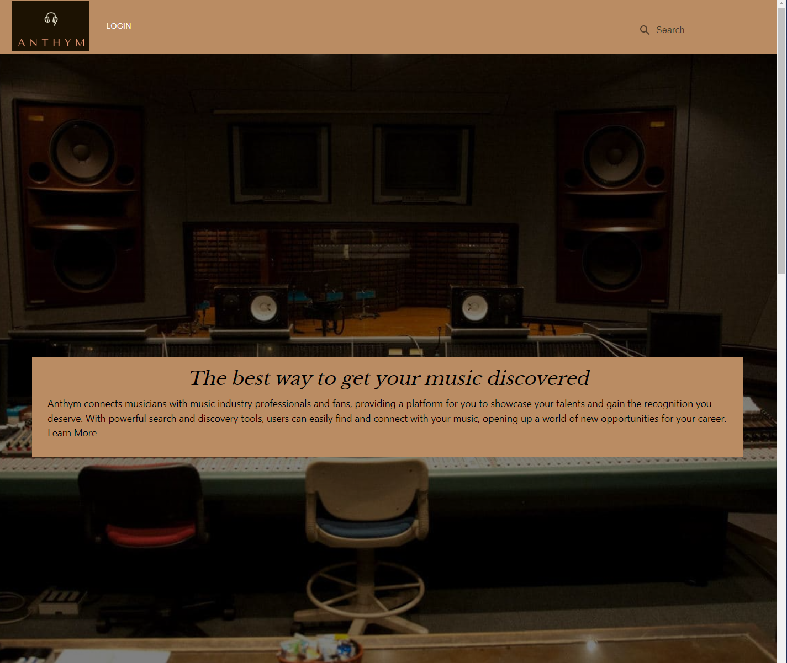
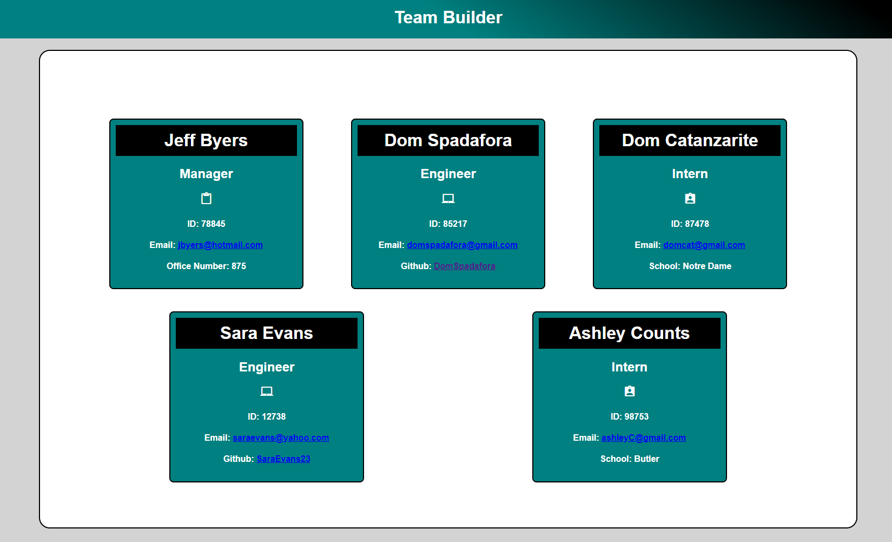

About Me
Currently I am a Web Developer holding a Bachelor of Arts in Sports Management and a minor Public Relations. I
recently earned a certificate in Full Stack Development from the University of Central Florida, where I
developed skills in JavaScript, CSS, React.js, responsive web design, and more. As an innovative problem-solver,
I enjoy building web applications that will benefit someones everyday life. Please click on my Work Experience
link above to learn more about me, or visit some of my recent projects to the right!
.jpg)
Travel Assistant

This web application allows people to view available AirBnb locations using the information from a plane ticket.
Nanny's Diary

Nanny's Diary connects caretakers with parents on a single platform. They are able to interact leaving updates for each other.
Anythm
Anthym is the ultimate music social media platform for music lovers searching for the next upcoming artist. With Anthym, you can discover new music, connect with other music enthusiasts, and share your favorite tunes with the world.
Team Profile Generator
This application produces an html webpage with your team members rendered on it. The individual cards are based off of what you inputed using Inquirer.